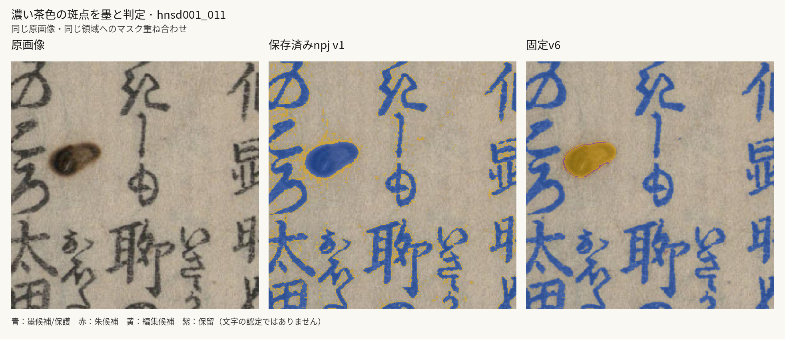
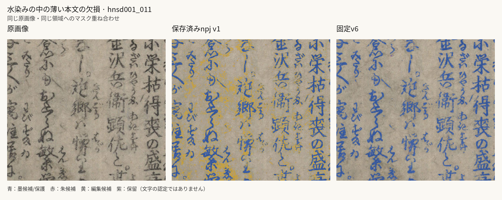

hnsd001_011
train / hnsd00000 · 既知開発ページの再確認 · 原寸 1857×2903
ページ全体
原画像原寸 · npj原寸 · v6原寸 · npj編集マスク · v6編集マスク

改善が見える：汚れの中心が墨候補から編集候補に移る。周囲の本文の主要部は保護。既知の孤立した斑点での改善。
濃い茶色の斑点を墨と判定
楕円状の茶色い斑点がほぼ全体で黒インク候補に入る。
原画像原寸 · npj原寸 · v6原寸 · npj編集マスク · v6編集マスク

部分改善・制限あり：本文周辺の編集候補は大幅に減り、薄い文字を編集しにくくなる。ただし保護マスクは一部のかすれで途切れており、全筆画の検出回復は断定しない。紙のムラも編集対象から外れる。
水染みの中の薄い本文の欠損
薄い本文の一部が黄の編集候補に入る。水染みと文字が混在するため矩形全体を文字GTにしない。
原画像原寸 · npj原寸 · v6原寸 · npj編集マスク · v6編集マスク
